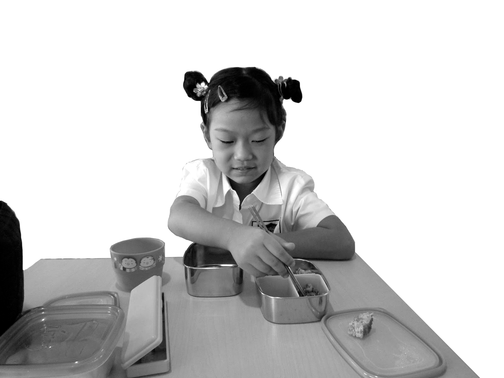

After moving to Jakarta in 2010, my mom always packed me a Korean lunch, doshirak, to school. My lunch looked and smelled different from what my friends brought, and I didn’t want to stand out. At first, I tried to hide it. But my friends were curious. They’d peer over and ask, “What did you bring today?” So I started sharing, and they shared back. Bit by bit, lunch became more than just food. It became an exchange. In those small moments, we weren’t just sharing meals, but we were sharing parts of ourselves.
Looking back, I think my mom packed me Korean lunches to remind me of home. Moving to a new country as a child was overwhelming, but my lunchbox was a quiet reassurance, a small piece of comfort in an unfamiliar place. And through my mom’s lunches, I was able to make friends, build connections, and share my culture, one bite at a time.